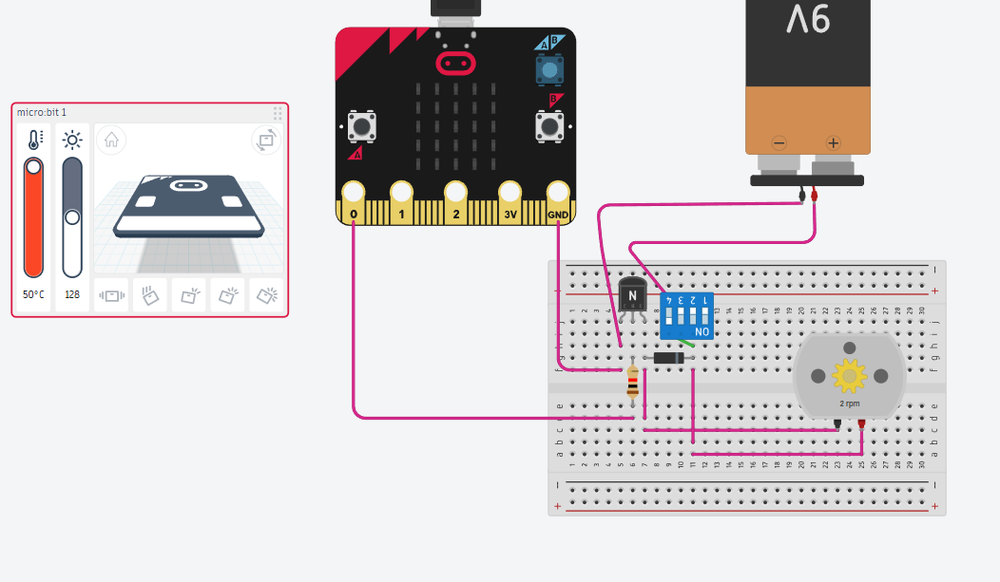
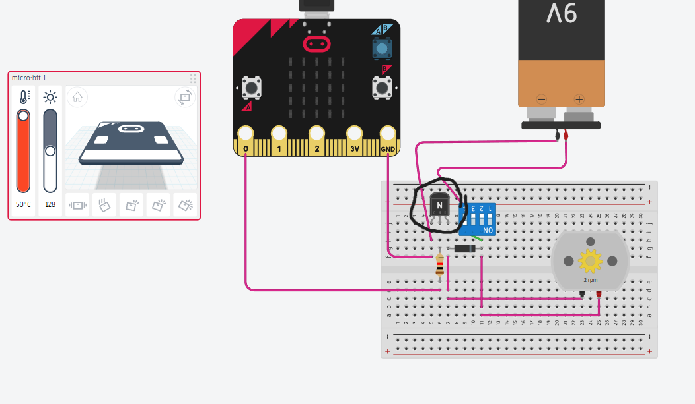
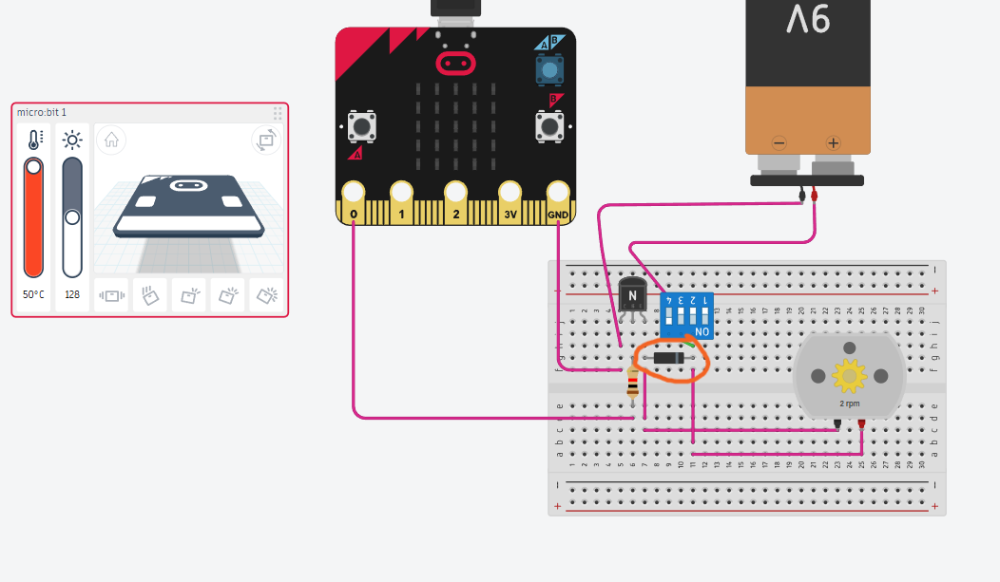
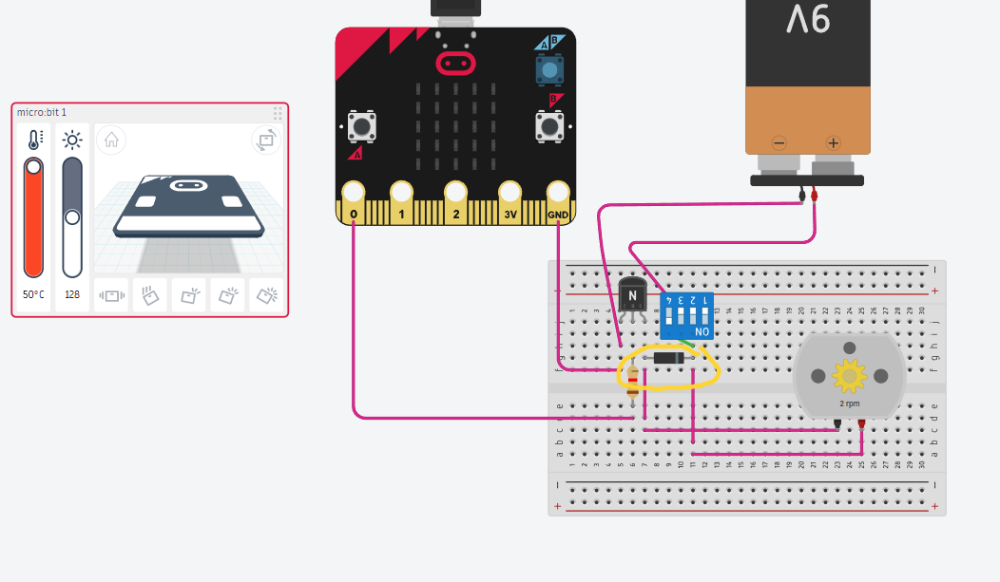

Mechanics of the prototype
On this page, you will find out how the major parts of the Breasy system work.
|  | Components list
|
↑The image above is a diagram of the entire circuit, it was made on Tinkercad.↑
| Beginning with the Microbit, code is installed so that a positive signal is sent through gate "0" to a 1k ohm resistor for extra safety. | |
|  | The positive signal is sent to the middle leg of the transistor, telling it to close the circuit and therefore allow power to flow. |
| The next major section is the battery. A 9 volt battery is used so that enough voltage can be supplied to the motor and the positive terminal is conencted to a switch to shut the power on or off. | |
|  | We have a diode placed with the grey side away from the transistor so that the motor does not send voltage flowing backwards. |
|  | Finally, once everything else is connected, the motor is connected to both ends of the diode and the circuit will be operational. |